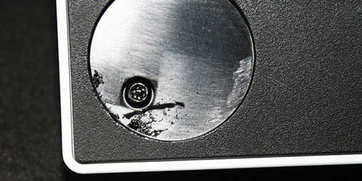
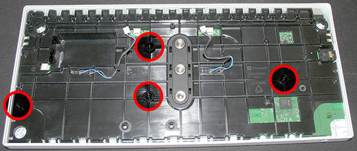

Chris Donnelly
C++ Engine Developer (Systems) in Frankfurt Am Main, Germany
In September 2018, Microsoft released the Adaptive Controller 🗗 (or "XBOX Adaptive Controller"), a game controller/input device made for users with physical disabilities or limitations.

The adaptive controller
The device works via the proprietary wireless signal used by the XBOX One / Series X, bluetooth, and USB-C cable connection (for PC, the proprietary wifi connection requires a further adapter to connect). The device features two prominently large black buttons, a D-Pad, equivalent buttons to "navigation" and "menu", a large "guide" button, and a profile button for quick mode switches. Along the back and sides of the controller is a microphone/headset input, a USB socket for both left and right analog stick, a sync button, a USB-C charging/connection socket, a power socket, and 19 audio jack sockets. Note that the device requires an external power source via the power jack (assumed 5.5mm x 2.1mm power jack), if using the "quadstick" accessories
The bottom of the device also features 3 mounting screws for different wheelchairs or "rigging" devices (2 of 10-24 screw for AMPS compatible mounts and 1 of ¼-20 for tripod mounts).

Screw fittings on the bottom of the device
The device can be bought from multiple retailers, including Microsoft Store, and arrives in a box which can be opened with one hand, using minimal strength, and easily set up
The XAC has USB jacks on its left and right faces for respective analog stick USB inputs, and a 4-pole (see table below) 3.5mm jack for the headset also on the left face. All other jack inputs can be found on the back face:

A little more information on the buttons and inputs:
| Connector Type | Type | Relates to Gamepad | Notes |
|---|---|---|---|
| Guide/Nexus | Button | Power, Guide / OS controls | Tactile click |
| D-Pad | Button (x4) | Up / Down / Left / Right | Tactile click |
| View ("back") | Button | View button | Tactile click |
| Menu ("start") | Button | Menu button | Tactile click |
| Profile | Button | manage input profiles | Tactile click, 3xLED readout |
| A | Button | Face button: A | Very large, tactile click |
| B | Button | Face button: B | Very large, tactile click |
| Headphone/Mic | Audio jack | audio/voice/chat | 3.5mm 4-pole audio jack* |
| Left Stick | USB | Left Analog Stick | powered, HID protocol |
| Right StickStick | USB | Right Analog Stick | powered, HID protocol |
| Sync | Button | Sync Button | Syncs to device, Wifi/BT toggle |
| Y | Digital Jack | Face button: Y | Digital over audio jack |
| X | Digital jack | Face button: X | Digital over audio jack |
| B | Digital Jack | Face button: B | Digital over audio jack, Override** |
| A | Digital Jack | Face button: A | Digital over audio jack, Override** |
| Right thumbstick press | Digital jack | Right stick (click) | Digital over audio jack |
| RB | Digital Jack | Bumper: Right | Digital over audio jack |
| RT | Jack | Right trigger | Analog over audio jack |
| LT | Jack | Right trigger | Analog over audio jack |
| View | Digital jack | View button | Digital over audio jack, Override** |
| Menu | Digital jack | Menu button | Digital over audio jack, Override** |
| X2 | Digital jack | 2-axis (thumbstick) | Dual Analog over stereo jack |
| X1 | Digital jack | 2-axis (thumbstick) | Dual Analog over stereo jack |
| Guide/Nexus | Digital jack | Guide/Nexus button | Digital over audio jack, Override** |
| LB | Digital jack | Bumper: Left | Digital over audio jack |
| Left thumbstick press | Digital Jack | Left stick (click) | Digital over audio jack |
| RIGHT | Digital Jack | D-Pad: Right | Digital over audio jack, Override** |
| UP | Digital Jack | D-Pad: Up | Digital over audio jack, Override** |
| DOWN | Digital Jack | D-Pad: Down | Digital over audio jack, Override** |
| LEFT | Digital Jack | D-Pad: Left | Digital over audio jack, Override** |
| Data cable | USB-C | n/a - connection to PC/console | Also can be used to charge device |
| Power | Jack | n/a - power | 5VDC - 2A (USB voltage @ 2A) |
The information on this page refers to both my controller (model 1836), and the v1.5 input specifications document for the adaptive controller available via this page (local copy here) - copyright 2012-2018 Microsoft Corporation
Requirements to open the XAC:
The base of the controller (bottom face) hides 4 screws under its rubber feet (see the image previously, of the controller's base and fitting screws). These rubber feet are round rubber pads with some medium glue applied to them, and can be gently teased off to reveal the Torx T8 screws underneath:
The Torx T8 screws under the foot pads
Removing these 4 screws will loosen the outer bottom base, and it can be gently prised away from the rest of the unit, revealing the internal plastics and some of the main board:
XBOX AC with bottom face removed
Here we can see the first internal layer of the Adaptive Controller, a plastics board (the motherboard is screwed into this, and it contains the A and B button switches), and three main cables used by the Adaptive Controller:
Three cables under the AC
The cables correspond to (L→R in above picture):
| Colour coding | Connects to |
|---|---|
| Red / White / Black | Internal Battery |
| Blue / Brown (left in photo) | Large B Button switch |
| Blue / Brown (right in photo) | Large A Button switch |
These cables can be gently disconnected by hand, or with some needle-nose pliers
The internal battery and large face buttons have been disconnected, but before continuing, a quick look at the battery:
Internal battery
The under side of the battery also has a sticker with a serial number / QR code
Documentation available online also states this battery has a model number 1836 and UN-3841 (possibly an internal or invoice-based reference)
The internal plate is screwed to the motherboard and holds the switch mechanism (and cables) for the two large A and B buttons. It also contains the mounting plate which is visible from the bottom outer plate (see earlier). This is screwed into the top face's underside by four (4) Torx T8 screws
Internal battery
The plate has Microsoft branding as part of the moulding (alongside standard certifications), and is ABS Polycarbonate (PC/ABS). It is labelled with the following text/number strings:
Removing these four screws (above) can remove the plate and motherboard, although one part is not connected to either and can fall loose -- the 4-pole audio jack (see next section)
The audio/voice/chat connector (on the left side of the controller, used for a chat headset) uses the same parts and connection as the revised XBOX One gamepad (and XBOX Series gamepads), a jack with feet/pad connectors to the board, presumably making production costs lower by using existing parts/connectors.
Internal battery
The XAC's chat jack uses the same TRRS layout (see here) as the XBOX One (rev. 2) / Series S|X Gamepad and accessory standard, and not the original proprietary connector from release day 2013 devices. The layout used is CTIA/AHJ, meaning TRRS = Audio L / Audio R / GND / Microphone (mono)
Please note, the Microphone ring can also be used for Video under the CTIA/AHJ standard
A diagram highlighting the layout used:

TRRS layout for XAC chat audio jack
With the audio jack adapter out of place, the board and internal plate can be removed, giving the following:
TRRS layout for XAC chat audio jack
The highlighted points of the board (and lid) are as follows (numbered AND color coded, sincerest apologies to any readers who have issues with the image and table):
Note: The order of the lower board is reversed horizontally from the lid in the picture, as these assemble together
| Number | Colour | Item | notes |
|---|---|---|---|
| 1 | Red  |
Top B button | Custom switch |
| 2 | Red |
Top A button | Custom switch |
| 3 | Light Blue  |
Guide / Nexus button | Custom plastic, backlit |
| 4 | Light Green  |
View button | On-board switch |
| 5 | Yellow  |
Menu button | On-board switch |
| 6 | Blue  |
Profiles button | Also: 3 LEDs for indicator |
| 7 | Maroon  |
Charge indicator | Charging LED indicator (green) |
| 8 | Purple  |
D-Pad buttons | On-board switches (white, 5-6mm?) |
| 9 | Orange  |
Sync | On back face, requires extra plastic button |
Also higlighed above (white circle) - phillips screw (x1, the only phillips screw in the device). To separate the inner plate, remove the following screws (Torx T6, and phillips included):
Screws to remove to separate board and inner plate
The board is a single piece mainboard, with input jacks (x19), USB (x2), power jack (PWR) and USB-C connector
The XAC main board
The main board shows some serial numbers/part numbers/specs:

Serials and model numbers on the board
Also chips:

Chips on the board (Excuse the photo quality, I don't own a macro lens)
I have no experience or knowledge of these chips, some basic searching and invoice information was all that was used.
The 19 input jacks on the back face of the controller allow the user to provide input for a gamepad button which each jack represents. There are two types of jack here; analog input, and digital input, representing simple on/off (pressed/released) states and ranged states (a linear "range" of values -- such as 0..255 or 0..65535, the controller normalizes the value to an appropriate internal range, according to its documentation).

Chips on the board (Excuse the photo quality, I don't own a macro lens)
Digital Jack Input (buttons)
The digital input works on the theory of binary switched values; booleans, being true or false (or on/off, zero/one, etc). This is (when closer to a hadware level) translated into reading an electrical impulse, and ascertaining if the impulse has enough electrical value (voltage, resistance) which surpasses or remains below a given threshold.
Due to the nature of being a simpler signal, extra rings are not required (or recommended) for these connectors - a "mono" jack works for this, as this requires only two connectors to represent the circuit as open/closed:

Digital jack connector (image from components101)
In the case of the Adaptive Controller, the requirements for each value (pressed and released) are as follows:
| Signal | Requirement | Represents |
|---|---|---|
| High | > 0.6V | Pressed state |
| Low | < 0.3V | Released state (passive) |
Analog Jack Input (triggers)
The analog jack input follows a principle of representing a number in a range, a value between the minimum and maximum values of a single axis; the number cannot be represented in one instant by using open/closed values - either a variable electrical reading can be used, or a series of rings are needed to build a byte-like value. The easier option for timing (and using existing hardware) is to use a ring with a variable electrical reading (namely, the ring of a stereo jack, or R2 in the TRRS of a 4-pole 3.5mm CTIA/AHJ jack, as they have the same positioning):

Analog jack connector (image from fisherswiring2j.atuttasosta.it/)
| Signal | Requirement | Notes |
|---|---|---|
| Minimum | ≤ 650 mV | Adapts min to device within this area |
| Maximum | ≥ 650mV | Adapts max to device within this area |
Dual Analog Jack Input (thumbsticks)
Providing analog values for thumbsticks/movement for two axes requires two analog inputs (stick X and Y), crowding the device, and unnecessarily untying the two intertwined axes. The solution is to provide an input for a form of analog stick/joystick as a single input jack with two analog channels
A quick side note: Thumbsticks traditionally provide three (3) values (2 analog axes in the form of analog stick X and Y, and a ditigal axis in the form of the thumbstick being pressed) - the XAC has separate inputs for the 'thumbstick button' as digital jack inputs

Dual Analog jack connector -- 4-pole CTIA (image from fisherswiring2j.atuttasosta.it/)
Each R (ring) in the TRRS layout can be used to transmit analog values (variable voltage/resistance) for the two axes. While I don't have appropriate data on the values read, the petentiometer data can provide two analog values (one per axis) over the (aforementioned) rings of the jack
When looking at the motherboard, it's easy to see the antennae for the wireless communications (the same ones which XBOX gamepads use - proprietary 'WiFi', and Bluetooth)
Board Antennae and micro coaxial connectors
These antennae are similar to the types used in modern laptops (and in phones); simple planar coils. Also, "laptop coaxial" connectors are on the board, (right side of above picture, also highlighted with smaller red boxes throughout the picture), presumably for expansion, or as a standard with the board for optional external signal boosting.
The main board also has a soldered connector/header for "RF DEBUG" and "NORMAL", presumably for diagnostics/testing the connectivity:
Possible debug solder point for testing/diagnosing/priming
Currently I have no further information on the wireless/bluetooth properties of the XAC.
Further required work looking into the XAC for me would involve using Wireshark to analyse the protocol used between the XAC and the PC or XBOX ( presumably this is standard USB with XInput format for data packets) and analysing the data used for the USB inputs (presumably this is simplified USB).
I'd like to know more about a 6-pin connector which is not used on the main board - leading toward the network antennae and D-Pad circuitry. This has some white printed indicator on it for some form of expected external cable, device, or antennae:
6-pin connector on board with white print
Links are correct at the time of writing